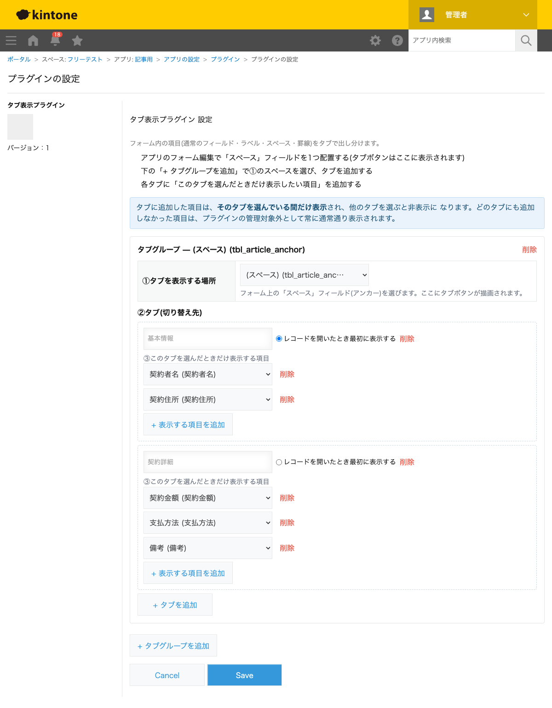
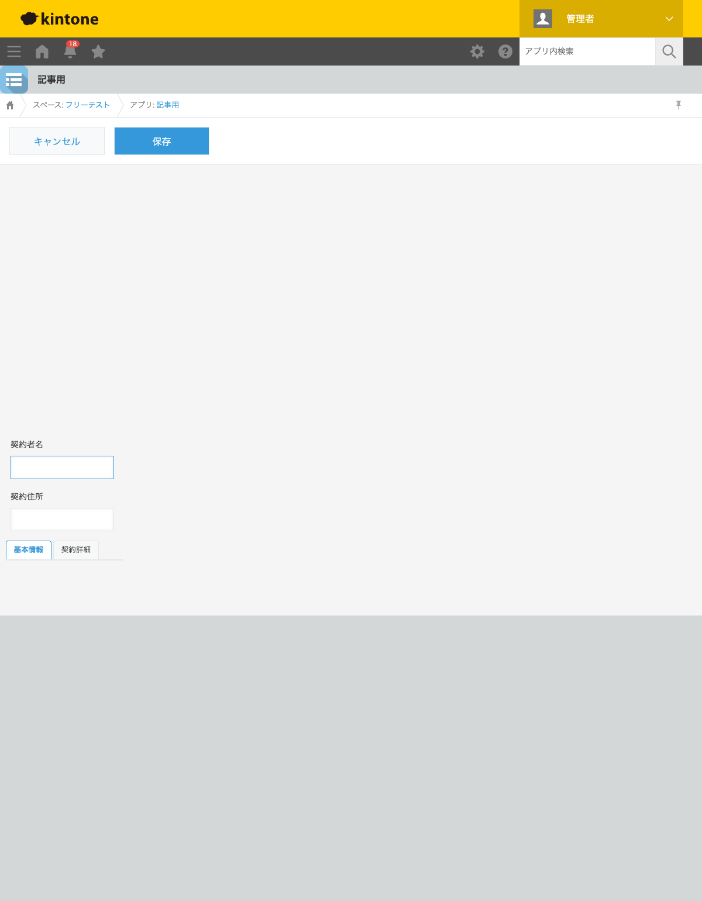
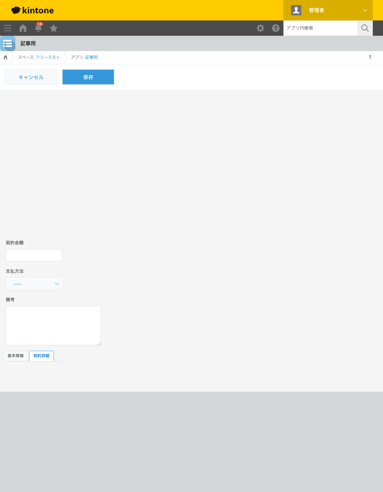

GovAppsプラグイン 安全性を確認できる無料kintoneプラグイン集
契約管理アプリのように「基本情報」「契約詳細」など性質の異なる項目が1つのフォームに並んでいると、 画面が縦に長くなり、入力者が今どこを埋めているのか分かりにくくなります。この記事では、無料 プラグインでフォームをタブ切り替え表示にする方法を、実際の設定画面と表示結果つきで解説します。
→ 対応プラグインを見るkintoneの標準機能には、フォームをタブで切り替えて表示する機能はありません。フォームは常に 上から下へ縦に並んだまま表示され、グループフィールドで折りたたむことはできても、タブとして 横に並べて切り替える表現はできません。JavaScriptカスタマイズを自作すれば、タブボタンの描画・ フィールドの表示/非表示切り替え・複数タブグループへの対応まで実装できますが、レイアウト情報 (ラベル・スペース・罫線の要素IDを含む)の扱いまで含めると簡単な作業ではありません。
「フォームをタブ切り替え表示にする」機能を用意する方法は、大きく4つあります。それぞれの 向き不向きをまとめました。
| 方法 | 向いている場合 | 注意点 |
|---|---|---|
| kintone標準機能(グループフィールド)のみ | 折りたたみ表示で十分な場合 | タブとして横に並べる表現はできない |
| JavaScriptを自作する | 社内に開発者がいて、独自のタブデザイン・挙動が必要な場合 | 表示/非表示切り替え・複数タブグループ対応の実装・保守が必要 |
| 有料の他社プラグイン | 予算があり、より高度なレイアウト編集機能を求める場合 | 月額課金が発生する。ソースコードが非公開で、外部通信の有無を利用者側で確認しにくいことが多い |
| GovAppsプラグイン(このプラグイン) | 無料で試したい、社内・庁内でセキュリティを確認してから導入したい場合 | タブに割り当てなかった項目は常に通常表示されたまま(タブの管理対象外) |
GovAppsのプラグインはすべて無料・広告なしで、追加課金なしで使い続けられます。 ソースコードはGitHubで全公開しているオープンソースなので、 「本当に外部と通信していないか」を自治体・企業のセキュリティ担当者自身の目で確認できます (このプラグインも個別ページにセキュリティレビュー結果を掲載しています)。
タブ表示プラグインは、フォーム上に配置した「スペース」 フィールドをアンカーにタブボタンを描画します。今回は「契約者名」「契約住所」「契約金額」 「支払方法」「備考」を持つ契約管理アプリで設定しました。

レコード追加画面を開くと、スペースフィールドの位置にタブボタン(「基本情報」「契約詳細」)が 表示されます。既定タブに指定した「基本情報」がアクティブな状態では、契約者名・契約住所 フィールドだけが表示されます。

「契約詳細」タブをクリックすると、契約者名・契約住所は隠れ、代わりに契約金額・支払方法・ 備考フィールドが表示されます。タブに割り当てなかった項目があれば、それはどちらのタブを 選んでも常に表示されたままになります。

同じタブ切り替えは詳細・編集・印刷画面(PC)でも動作します。1つのフォームに複数のスペース フィールドを配置すれば、タブグループを複数持たせることもできます。